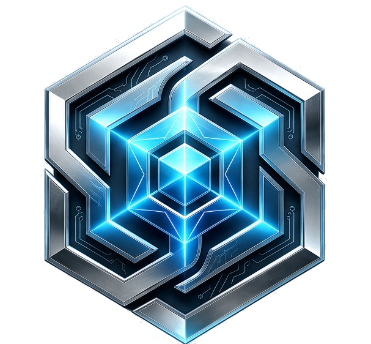

Sabueso Hunter
Explorador web headless construido sobre Chromium sigiloso. Diseñado con --disable-gpu para no consumir un solo megabyte de VRAM durante la navegación. Extrae artículos y documentación directamente a la Bóveda de Ingesta.

SYS-01 // COGNITIVE NERVOUS SYSTEM // ZERO-CLOUD
SISTEMA OPERATIVO COGNITIVO Y NÚCLEO AUTÓNOMO DE INTELIGENCIA LOCAL
Un búnker de computación cognitiva offline-first. Un sistema nervioso que observa, razona, sintetiza voz y auto-repara código sobre silicio modesto sin filtrar un solo byte a la nube corporativa.
«Razón sobre Proceso. Conciencia sobre Código.»
SISTEMA: EXARKON // NERVIO CENTRAL · REV v2026.10
01 // LA DECLARACIÓN DE SOBERANÍA
La mayoría de los sistemas contemporáneos son marionetas atadas a una API en la nube: envían tus pensamientos, código y secretos a servidores ajenos, rezando porque los términos de servicio no cambien y la conexión no colapse. EXARKON fue forjado bajo la doctrina contraria.
Ninguna IA tiene acceso directo a tu disco, a subprocess ni a tu red. Todo modelo —sea un LLM local o una sugerencia externa— se trata como un agente potencialmente alucinatorio o adverso. Todo pasa por el filtro inmutable de V.E.R.A.
Correr IA en local suele estrangular los equipos modestos. EXARKON monitoriza la VRAM y la temperatura en milisegundos. Si el silicio alcanza los 90°C, el Protocolo Sol Negro congela el cálculo antes de degradar el hardware.
Si un archivo de código rompe su sintaxis o falla una prueba, el agente AST Healer desmonta el árbol sintáctico abstracto, genera mutaciones quirúrgicas deterministas y valida el arreglo contra la suite de pruebas antes de sellar el commit.
02 // ESTRUCTURA FÍSICA Y COGNITIVA
Diez estratos estrictamente desacoplados (`x00` a `x09`). Ninguna capa superior puede violar las leyes de una capa inferior. Explora cada estrato interactivo para inspeccionar sus responsabilidades, invariantes y código verificado.
03 // DEFENSA EN PROFUNDIDAD
En EXARKON, la IA es un consejero brillante pero no confiable por defecto. Todo comando atraviesa seis compuertas criptográficas, sintácticas y humanas. Si una sola falla, el comando es repelido y registrado en la auditoría inmutable.
Comparación en tiempo constante con secrets.compare_digest(), token bucket de 20 req/min para prevenir ataques de denegación de servicio interna y validación de firma de origen.
Solo 18 acciones preautorizadas. La IA jamás puede solicitar «ejecutar_script». Escaneo sintáctico del payload serializado para neutralizar cualquier intento de evasión de subprocesos.
El operador humano tiene la última palabra. Antes de que el comando toque el disco, el sistema crea un snapshot atómico. Si el resultado es inesperado, se revierte con un solo toque.
04 // EYE OF HARDWARE
Cualquiera puede correr IA con un rack de ocho A100 alquiladas a Microsoft. La verdadera maestría de ingeniería consiste en ejecutar un sistema cognitivo completo en hardware terrenal (GPU de 4GB) sin ahogar la memoria ni degradar el silicio.
Una tarjeta de 4GB tiene 4,096 MB físicos, pero el controlador de pantalla de NVIDIA exige al menos 296 MB de reserva. Exarkon impone por validador de configuración un techo estricto en 3,800 MB. Cero excepciones de Out of Memory en tiempo de ejecución.
Calcular embeddings en GPU compite con la inferencia del modelo generativo. En EXARKON, la configuración CPU_EMBEDDINGS="always" es un validador indestructible que ignora variables de entorno para blindar toda la VRAM para Ollama.
A los 83°C se suspenden tareas de indexación en background. A los 90°C, se activa Sol Negro: se cancelan inmediatamente las inferencias pesadas, se descargan tensores y se preserva el estado en disco hasta que el ventilador devuelve la GPU a <75°C.
05 // ENJAMBRE ESPECIALIZADO
En lugar de un modelo gigante que alucina intentando hacerlo todo, EXARKON despliega micro-agentes asíncronos especializados, coordinados a través del EventBus.
Explorador web headless construido sobre Chromium sigiloso. Diseñado con --disable-gpu para no consumir un solo megabyte de VRAM durante la navegación. Extrae artículos y documentación directamente a la Bóveda de Ingesta.
Guardián de integridad del sistema. Calcula árboles de hashes criptográficos sobre los archivos de código en tiempo real, detectando modificaciones no autorizadas, carreras de estado en el EventBus y anomalías de latencia.
Cirujano sintáctico. Cuando un script falla o produce una excepción, AST Healer desmonta el código en nodos AST de Python, aplica mutaciones quirúrgicas, ejecuta la suite de tests en memoria y cura el archivo si la prueba pasa.
Motor RAG local alimentado por ChromaDB con distancia coseno y destilación de conocimiento. Deduplica vectores semánticos y sintetiza conceptos clave para que los modelos razonen con memoria histórica persistente.
Síntesis de voz neural local de latencia ultrabaja. Genera audio en español mexicano mediante modelos ONNX compactos sin enviar una sola muestra de voz a servidores externos ni depender de conexión a internet.
Canal de telemetría remota de una sola vía. Construye URLs efímeras en runtime sin almacenar credenciales en logs, transmitiendo alertas de estado, reportes de curación y notificaciones críticas del Dead Man's Switch.
06 // SUPERVIVENCIA Y CORTE DE EMERGENCIA
¿Qué ocurre si un sistema con agentes autónomos pierde el contacto con su operador humano? En lugar de seguir ejecutando cálculos o acumulando estados inconsistentes, entra en juego el Cordón Umbilical.
El operador humano o el nodo de control emite latidos periódicos. Mientras el canal responda, los agentes pueden continuar sus ciclos de tarea.
Si el temporizador expira sin señal, EXARKON congela inmediatamente todas las tareas en vuelo y genera un snapshot de seguridad en x04_vault.
Las conexiones de red se cortan, los procesos de Ollama se ponen en reposo y el sistema queda a la espera de reactivación manual autenticada.
07 // INTEGRIDAD PERSISTENTE
El principio maestro de EXARKON es «Asumir la brecha y asumir la alucinación». La robustez no consiste en fingir que la IA nunca cometerá un error, sino en garantizar que ningún error sea irreversible.
Documentos, transcripciones y código extraídos por Sabueso entran en un estado de solo lectura hasta ser validados.
Cualquier dataset o respuesta de IA que active una señal de sospecha se confina en cuarentena con acceso de red nulo.
Información filtrada y lista para indexación en ChromaDB. Solo datos que pasaron las 6 compuertas de V.E.R.A.
Fotografías diferenciales completas antes de cualquier mutación de código. Reversión atómica instantánea.
08 // LA REALIDAD TÉCNICA
La comodidad de un endpoint comercial oculta un costo estructural inmenso en soberanía, privacidad y predictibilidad.
| DIMENSIÓN | MODELO NUBE COMERCIAL (APIs) | EXARKON SOVERANO (LOCAL) |
|---|---|---|
| Privacidad & Telemetría | Tus prompts y código viajan a centros de datos externos. Sujetos a retención y reentrenamiento. | Cero fugas (0 bytes). Todo cálculo, embedding y síntesis corre sobre tu propia máquina. |
| Dependencia de Conexión | Si se cae tu proveedor de internet o la API tiene corte de servicio, tu trabajo se detiene por completo. | Offline-First. Funciona en un avión, en un búnker de concreto o en una isla desierta. |
| Control de Hardware | Caja negra. No sabes qué acelerador ejecuta tu código ni qué latencia esperar. | Eye of Hardware. Monitorización térmica en milisegundos, techo de VRAM a 3,800MB y Sol Negro. |
| Seguridad de Ejecución | Plugins con permisos ambiguos que ejecutan peticiones en tu entorno sin auditoría inmutable. | Protocolo V.E.R.A. Sandbox de 6 compuertas, whitelist de 18 acciones y confirmación humana previa. |
| Reversibilidad de Acciones | Inexistente. Si la IA sobreescribe un archivo o altera un estado, debes depender de tus propios backups. | Snapshots Atómicos. Cada acción destructiva guarda una réplica previa con rollback en <100 ms. |
| Costos Recurrentes | Pago por millón de tokens, suscripciones mensuales acumulativas e incertidumbre de facturación. | Cero costo por token. El costo marginal de razonar, indexar o sintetizar voz es cero pesos. |
09 // VERIFICACIÓN EMPÍRICA
En Sintaxis G no mostramos maquetas conceptuales de Figma. Cada afirmación en esta página está respaldada por código Python ejecutable en disco y verificado por suites de pruebas automatizadas.
x00_core/ : 3,412 líneas (EventBus, Logger, Boot)x01_host/ : 2,180 líneas (GPU Profiler, Watchdog)x02_fortress/ : 4,120 líneas (V.E.R.A. Server & Sandbox)x03_oracle/ : 3,890 líneas (RAG, Vector Store, Distiller)x04_vault/ : 3,654 líneas (Snapshots, Bóveda)x05_agents/ : 8,430 líneas (AST Healer, Sabueso, Sentinel)x06_hud/ : 2,840 líneas (WebSockets, D3.js)x08_tests/ : 3,950 líneas (205 tests de regresión)10 // CRITERIO Y RAZONAMIENTO
Detalles que definen por qué EXARKON está construido de esta forma y no de otra.
Porque EXARKON es un orquestador cognitivo de alto nivel que manipula directamente el árbol sintáctico abstracto (AST) de Python, modelos ONNX y tensores con asyncio de cero bloqueos. El cálculo numérico masivo de bajo nivel y análisis de millones de nodos ya está delegado a ARCHANGEL (que sí cuenta con 32,898 líneas en Rust nativo). La combinación de ambos mundos entrega la velocidad de Rust donde importa y la maleabilidad dinámica de Python en la orquestación.
No. Es una línea roja no negociable (Regla 3 de Seguridad). Las IAs en EXARKON solo tienen acceso a 18 acciones tipadas y acotadas en la whitelist. No existe ninguna acción de «ejecutar_shell» ni «eval». Además, el interruptor require_confirmation exige autorización explícita del operador para cualquier cambio en disco.
Utiliza modelos cuantizados ejecutados a través de Ollama (como phi3:mini, qwen2.5-coder:3b o mistral-nemo), adaptando dinámicamente las capas descargadas a la GPU según el perfil térmico del momento, mientras que los embeddings corren en CPU y la voz se sintetiza con Piper TTS en formato ONNX.